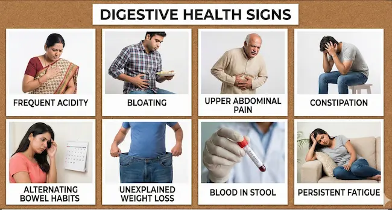
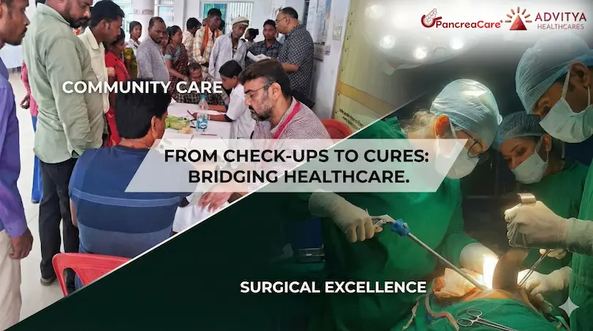

Kolkata has always been known for its rich culture, food, and intellectual work environment.
From Salt Lake Sector V to New Town and Eastern Kolkata Township offices to long daily commutes through EM Bypass, Park Street, Howrah Bridge, and Garia, the modern work routine in Kolkata has changed dramatically. Late office hours, traffic stress, skipped meals, and late-night dinners are quietly affecting the gut health of thousands of working men and women.
Many people dismiss symptoms as “normal acidity” or “pet kharap”, but doctors are now seeing increasing cases of chronic acidity, IBS, fatty liver, gallbladder issues, pancreatitis, and even late-diagnosed GI cancers linked to lifestyle patterns.
This blog explains why digestive problems are rising in working Kolkata, what symptoms should not be ignored, and when medical evaluation becomes important.
The Changing Work-Life Pattern in Kolkata
Traditionally, Kolkata followed a relatively balanced routine — early dinners, home-cooked meals, and slower-paced workdays. That pattern has changed.
Today’s working Kolkata faces:
- Long office hours in IT, corporate, healthcare, sales, and service sectors
- Heavy traffic delays during peak hours
- Skipped breakfasts or rushed lunches
- Late dinners, often after 10 PM
- Increased dependence on outside food and food delivery apps
- Chronic stress and poor sleep
These factors may seem harmless individually, but together they disrupt the digestive system over time.
How Traffic & Stress Directly Affect Digestion
Traffic stress is not just a mental issue — it has a physical impact on the gut.
When you are stressed:
- The body releases cortisol and adrenaline
- Blood flow shifts away from digestion
- Acid production increases
- Gut movement becomes irregular
For people commuting daily through congested areas like Sector V, New Town, Ruby, Gariahat, or Howrah, this stress becomes chronic.
Over time, this leads to:
- Acid reflux (GERD)
- Bloating and gas
- Irritable Bowel Syndrome (IBS)
- Appetite disturbances
- Constipation or loose motions
Many patients are surprised to learn that stress alone can trigger long-term digestive disorders, even without poor food habits.
Late Dinners: A Major Digestive Trigger
One of the biggest changes in working Kolkata is late-night eating.
Digestive organs — especially the stomach, liver, gallbladder, and pancreas — follow a natural rhythm. Late dinners disrupt this rhythm.
What late dinners cause:
- Increased acid reflux at night
- Poor digestion due to slowed metabolism
- Fat accumulation in the liver (fatty liver)
- Gallbladder stress leading to gallstones
- Night-time bloating and disturbed sleep
Eating heavy meals after 9:30–10 PM and then sleeping soon after is a common pattern seen in working professionals across Kolkata — and a major contributor to rising GI complaints.
Skipped Meals & Irregular Eating
Many working individuals:
- Skip breakfast due to early office hours
- Eat lunch late or hurriedly
- Compensate with heavy dinners
This irregular eating pattern confuses digestive enzyme release and bile flow, leading to:
- Acidity
- Indigestion
- Weak appetite signals
- Nutritional deficiencies
Over time, this can contribute to chronic gastritis, ulcers, and metabolic issues.
Common Digestive Symptoms Kolkata’s Working Population Ignores
Doctors often hear patients say:
- “এটা তো সাধারণ গ্যাস”
- “অ্যাসিডিটি তো সবারই হয়”
- “অফিসের চাপের জন্য হচ্ছে”
But some symptoms should never be ignored.
Warning signs include:
- Frequent acidity or heartburn
- Bloating after small meals
- Upper abdominal pain or burning
- Constipation lasting weeks
- Alternating constipation and loose stools
- Unexplained weight loss
- Blood in stool
- Persistent fatigue with digestive issues

These may indicate conditions like GERD, IBS, fatty liver, gallbladder disease, pancreatitis, or early GI cancers.
Why Digestive Diseases Are Diagnosed Late in Kolkata
Despite good medical infrastructure, many digestive diseases in Kolkata are diagnosed late because:
- Symptoms are normalized
- Fear of tests like endoscopy or colonoscopy
- Dependence on over-the-counter antacids
- Busy work schedules delaying doctor visits
Unfortunately, delay often leads to complications that could have been prevented with early evaluation.
Who Is at Higher Risk?
Working professionals in Kolkata should be extra cautious if they have:
- Desk jobs with minimal physical activity
- Irregular sleep schedules
- High stress levels
- Frequent outside or processed food intake
- Alcohol or tobacco use
- Family history of digestive or liver diseases
- Diabetes or obesity
After the age of 40–45, the risk of serious digestive disorders increases further.
When Should You See a Gastro Specialist?
You should consult a gastroenterologist if:
- Symptoms persist beyond 2–3 weeks
- Painkillers or antacids are used regularly
- Symptoms wake you up at night
- You notice weight loss or blood in stool
- There is a family history of GI cancer
Early consultation does not always mean surgery. In most cases, timely diagnosis allows treatment with medicines, lifestyle changes, or endoscopic procedures.
Protecting Your Digestive Health in a Busy Kolkata Lifestyle
Simple steps can make a big difference:
- Avoid late-night heavy meals
- Eat dinner at least 2–3 hours before sleep
- Manage work stress actively
- Stay hydrated throughout the day
- Avoid excessive painkiller use
- Don’t self-medicate chronic acidity
Most importantly, listen to your gut. Persistent symptoms are signals — not inconveniences.
Advitya Healthcares, Kolkata – Expert Care for Digestive Health

At Advitya Healthcares (Kolkata), we specialize in comprehensive evaluation and treatment of digestive disorders, liver diseases, gallbladder conditions, pancreas problems, and GI cancers.
Our approach focuses on:
- Early diagnosis
- Ethical, step-wise treatment
- Advanced diagnostics
- Patient education and long-term care
If you are a working professional in Kolkata struggling with ongoing digestive issues, timely consultation can prevent serious complications.
📍 Book a Consultation – Kolkata
🌐 Website: https://advityahealthcares.com
📞 Call / WhatsApp: +91-9211221553
Your gut health matters — especially in today’s fast-paced Kolkata.
Have a question this article does not answer?
Send us your reports. A specialist reviews them before you travel, so the first visit begins with a plan rather than a repeat test.